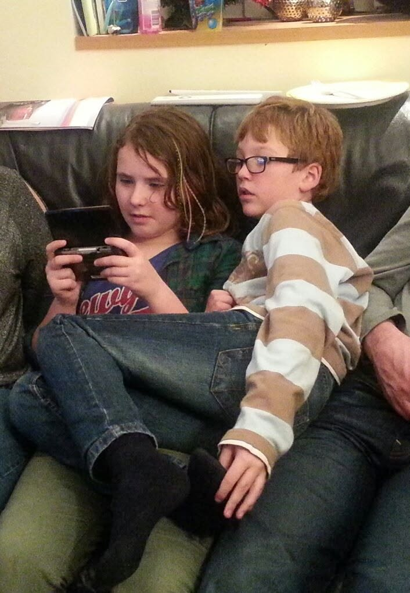

stats
- html
- 60
- CSS
- 45
- javascript
- 20
- design
- 75
character profile
I grew up with gaming: I had a DS and all the nintendo handhelds that followed. My dad and I used to spend our time behind the computer playing games! A love for games really was something I was raised with! Even now, over 20 years after the release of the DS (and exactly 20 years since I got my DS!).
I still play and cherish those games dearly, seeing how these games hold up and stand the test of time is so cool! These games also are so dear to me because they give me a way to still feel connected to my dad, even though he is no longer here. Seeing his name on the leaderboards on my DS makes it feel like I'm still the little kid trying to beat his time in Mario Kart (and failing miserably).
And I think thats the beautiful thing about (older) games, they help you stay connected to people, memories, but most importantly, yourself.
